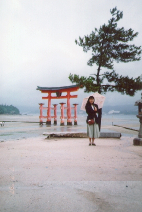

広島 (97.7)
安芸の宮島

|
日本に帰った時にちょっとだけ働いていて、出張で広島へ行きました。安芸の宮島っていうとどうしても”秋”を想像してしまいません？私だけかな？でも季節は７月、しかも７日（七夕）でした(^^)。 |

=広島・安芸の宮島(97.7)=
|
あいにくの雨だったのですけど、きれいでしょう？ 厳島神社の鳥居は海にあります。普通の神社はまず鳥居があって、そこからは境内になり、境内の先に社殿が建っていますが、構造上は厳島神社も普通の神社と全く同じです。ただ、神社そのものが海の上に建てられたので（高床式の建物）、鳥居も海にあり、干潮時には全て現れて、満潮時には下の方が水没するそうです。（案内してくれたあきにーさん談（広島在住）） 干潮時にはあの写真に写っている辺りで潮干狩りが出来るんだけど、鳥居よりも内側では貝を採ってはいけないそうです。神社の境内なので。（あきにーさん談） 「松はタダの松(^_^;。たまたま植えられてただけで、何にも意味は無いと思います。 なんか、いいかげんな答だなあm(_ _)m。それにしても、あの写真とった人、なんて下手くそなんでしょう(^_^;。天気が悪かったことを差し引いても、構図も糞もあったもんじゃないや。ピントはまあ仕方ないにしても、もう少し美しく撮影できたはずだ。」（あきにーさん談）。。。。。そうかなぁ。。。きれいに撮れてたので感動でしたよ(^^)。雨の静かな雰囲気が出ているでしょう？(^^) |
[ホームへ] [写真一覧へ]